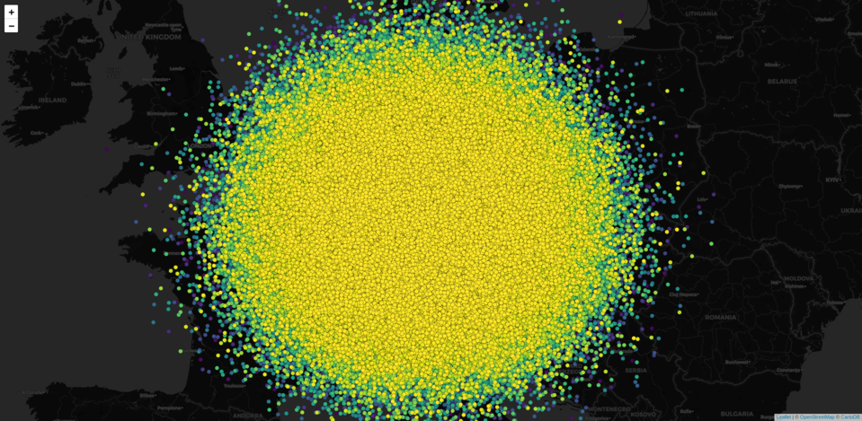

An R package for fast web gl rendering of features on leaflet maps. It’s an R port of https://github.com/robertleeplummerjr/Leaflet.glify where more detailed information/documentation can be found. Also, if you like what you get here, make sure to star the original repo!
Installation
Stable version from CRAN
install.packages("leafgl")What does it do?
It allows rendering of a large amount of features on a leaflet map. What exactly a “large amount” is, depends
- on the types of features and
- on the hardware/software of the rendering machine.
Regarding 1. millions of points should be no problem, but millions of polygons might, depending on their complexity - i.e. the number of vertices.
With regard to 2., obviously the amount of RAM will matter most but there are other, more suptle, problems that can occur.
Given it’s name, leafgl is intended to fully integrate with the leaflet package, though it is very likely that it won’t be a 1:1 replacement for the respective leaflet::add* functions. For example, given the intention to render/visualise as many features as possible we need to make a compromise on what additional information we allow to be part of the rendering. So far, we allow coloring of features and popups based on one column of the feature attributes, hence you cannot provide your own popup content. This may seem drastic, but all this information is costly both in terms of performance/speed and memory. In the end, who wants to wait for a map that the browser isn’t able to render anyway…
What doesn’t it do?
For starters, it doesn’t guarantee to be working tomorrow. At this stage leafgl is pre-alpha and under heavy development so things are likely to change frequently. For example, we are thinking about shorter funtion names (e.g. addGlPolygons instead of the current addGlifyPolygons). Additionally, we are still figuring out which pathway is best to use in order to pass data from R to the browser. As a result, rendering environments other than the browser (or RStudio viewer) may not work properly or at all until we approach a more stable implementation.
NOTE
Depending on your operating system and browser, you may see some weird colors that do not correspond to the ones that you specified. The only known work-around at this stage is to set opacity = 1. For more details the inclined reader is referred to this issue
What can I do to help?
A lot! First and foremost you can use it as often as possible and report issues/bugreports and/or feature request (see end of page for details). If you have ideas on how to enhance functionality without impacting performance too much and feel confident enough to provide pull request, please don’t hesitate. Finally, if you have proficient knowledge of JavaScript and want/know how to improve the package in any way, we would very much love to hear from you!
Example usage
1 Mio. points on a map
This will render 1 Mio. points on a standard leaflet map.
library(leaflet)
library(leafgl)
library(sf)
n = 1e6
df1 = data.frame(id = 1:n,
x = rnorm(n, 10, 3),
y = rnorm(n, 49, 1.8))
pts = st_as_sf(df1, coords = c("x", "y"), crs = 4326)
options(viewer = NULL) # view in browser
leaflet() %>%
addProviderTiles(provider = providers$CartoDB.DarkMatter) %>%
addGlPoints(data = pts, group = "pts") %>%
setView(lng = 10.5, lat = 49.5, zoom = 6)
Colouring points by value mapping
For this we use library(colourvalues) because it can create color voctors in the blink of an eye!
library(leaflet)
library(leafgl)
library(sf)
library(colourvalues)
n = 1e6
df1 = data.frame(id = 1:n,
x = rnorm(n, 10, 3),
y = rnorm(n, 49, 1.8))
pts = st_as_sf(df1, coords = c("x", "y"), crs = 4326)
cols = colour_values_rgb(pts$id, include_alpha = FALSE) / 255
leaflet() %>%
addProviderTiles(provider = providers$CartoDB.DarkMatter) %>%
addGlPoints(data = pts, fillColor = cols, group = "pts") %>%
setView(lng = 10.5, lat = 49.5, zoom = 6)
100k polygons on a map
In reality, it only 97112 polygons… But who wants to be pedantic here?
This data was downloaded from https://download.geofabrik.de/europe/switzerland.html
library(leaflet)
library(leafgl)
library(sf)
library(colourvalues)
ch_lu = st_read("/media/timpanse/d8346522-ef28-4d63-9bf3-19fec6e13aab/bu_lenovo/software/testing/mapview/switzerland/landuse.shp")
ch_lu = ch_lu[, c(1, 3, 4)] # don't handle NAs so far
options(viewer = NULL)
cols = colour_values_rgb(ch_lu$type, include_alpha = FALSE) / 255
leaflet() %>%
addProviderTiles(provider = providers$CartoDB.DarkMatter) %>%
addGlPolygons(data = ch_lu,
color = cols,
popup = "type",
group = "pols") %>%
setView(lng = 8.3, lat = 46.85, zoom = 9) %>%
addLayersControl(overlayGroups = "pols")
Shiny
Thanks to @ColinFay leafgl has dedicated shiny functions. Given that what leafgl produces is a leaflet map, we only need to use leafglOutput in our ui call. In the server call we can simply use renderLeaflet. Here an example:
library(leaflet)
library(leafgl)
library(sf)
library(shiny)
n = 1e6
df1 = data.frame(id = 1:n,
x = rnorm(n, 10, 3),
y = rnorm(n, 49, 1.8))
pts = st_as_sf(df1, coords = c("x", "y"), crs = 4326)
options(viewer = NULL) # view in browser
m = leaflet() %>%
addProviderTiles(provider = providers$CartoDB.DarkMatter) %>%
addGlPoints(data = pts, group = "pts") %>%
setView(lng = 10.5, lat = 49.5, zoom = 4) %>%
addLayersControl(overlayGroups = "pts")
ui <- fluidPage(
leafglOutput("mymap")
)
server <- function(input, output, session) {
output$mymap <- renderLeaflet(m)
}
shinyApp(ui, server)Contact
Please file Pull requests, bug reports and feature requests at https://github.com/r-spatial/leafgl/issues